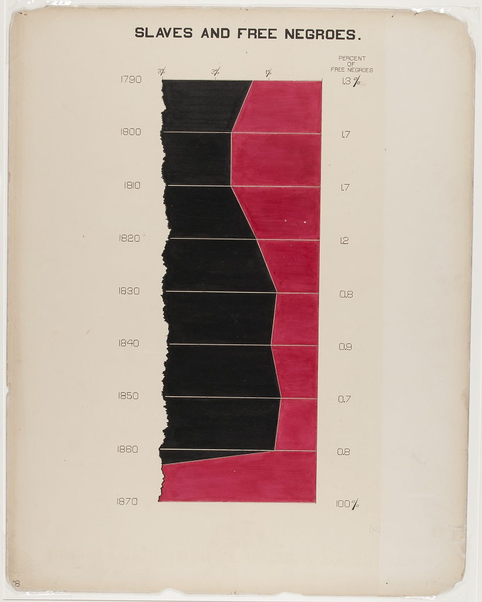

IIt’s been some time since I last participated in a Data Visualization Community Challenge. Inspired by several posts from my #datafam peers, I’ve decided to take on this week’s Du Bois Visualization Challenge using three of today’s most popular Business Intelligence (BI) tools: Tableau, Power BI, and Looker Studio.
The experience was not only a test of my abilities but also an opportunity to evaluate these tools’ capabilities in the context of historical data visualization.
What is the Du Bois Visualization Challenge?
It is a community project hosted by the Data Visualization Society, with the primary goal of recreating the visualizations from 1900 Paris Exposition using modern tools.
Week 2 Challenge - “Slaves and Free Negroes” Portrait (Original Plate 12)
This week’s challenge involves recreating the original Plate 12: “Slaves and Free Negroes” portrait. See the original portrait below:

Recreating the visualization in three different BI Tools (Tableau, Power BI, Looker Studio)
My objective for this exercise was to stay as true to the original visualization as possible, while exploring the features and limitations of each tool.
Data
The data consisted of three numeric fields: Year, Slave, Free
To facilitate the visualization process it is best to unpivot / re-shape the data to display: Year, Attribute, Value
| From | To |
|---|---|
Comparative Analysis
After completing the recreating of the visualization across all three tools, here are my takeaways:
Tableau was the best tool for recreating the visualization with the highest fidelity to the original.
Both Tableau and Power BI facilitate the easy unpivoting/reshaping of the data.
Tableau and Looker Studio offer straightforward means to share the interactive dashboards with the Community.
| Criteria | Tableau | Power BI | Looker Studio |
|---|---|---|---|
| Ease of recreating Historical Visualization | ✅ |
⚠️ | |
⚠️ |
| Reshaping data | ✅ |
✅ |
❌ |
| Customization and Aesthetics | ✅ |
⚠️ | |
⚠️ |
| Sharing Interactive Dashboards with Community | ✅ |
⚠️ | |
✅ |
Final Dashboards / Reports
Select the tabs below to navigate through the interactive reports created using each BI tool.
The final visualization in Tableau was strikingly close to the original, thanks to its robust customization options.
Ease of recreating Visualization - High. Robust customization options for closely matching original aesthetics.
Reshaping data - Easy. Ability to unpivot data directly in Data Source Pane.
Sharing Interactive Dashboards - Easy. Ability to share Interactive Dashboard in Tableau Public.
The visualization created with Power BI captured the essence of the original, however some limitations in design customization are apparent.
Ease of recreating Visualization - Low. Customization / Formatting Options. unable to use Area Chart with Year as continuous Date in the Y axis. Used Stacked Bar chart instead.
Reshaping data - Easy. Ability to unpivot data directly in Power Query.
Sharing Interactive Dashboards - Limited. May require Power BI Pro License to share .
Similar to Power BI, the visualization created with Looker Studio captured the essence of the original, however some limitations in design customization are apparent.
Ease of recreating Visualization - Low. Customization / Formatting Options. unable to use Area Chart with Year as continuous Date in the Y axis. Used Stacked Bar chart instead.
Reshaping data - Not Posible. Data needs to be reshaped before loading it into Looker Studio, or through a direct connection to a Database.
Sharing Interactive Dashboards - Easy. Ability to share Interactive Dashboard / Report through link. (Requires permissions to be updated)
Please reach out if you have any questions on how these Dashboards were created.
Thanks;
Paula M